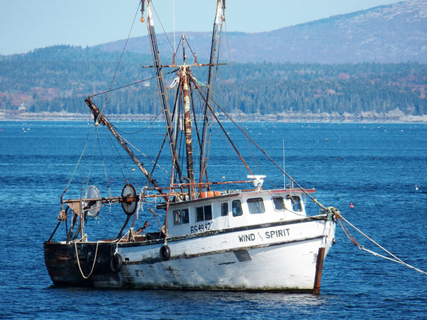

This is a project to show how our oceans are being exploited and ways we can save them.

At this current rate, 70% of the Earth will be gone. How? Overfishing is when fisherman fish so much that fish cannot be made fast enough, which depletes the fish population. According to Save Our Seas , "Overfishing occurs when fish and other marine species are caught faster than they can reproduce. It is the result of growing demand for seafood around the world, combined with poor management of fisheries and the development of new, more effective fishing techniques. If left unchecked, it will destroy the marine ecosystem and jeopardize the food security of more than a billion people for whom fish are a primary source of protein." Overfishing is a major problem that we humans have put ourselves into, and if this behavior is continued, the world could be in trouble with the destruction of 70% of the Earth.
Here is a case study that shows the effect of what is happening right now because of overfishing. According to Save Our Seas, "2009, WWF (World Wildlife Foundation)predicted that without drastic measures, Atlantic bluefin will disappear by 2012. Unfortunately, attempts to implement such measures—most recently at the 2010 Convention on International Trade in Endangered Species of Wild Fauna and Flora (CITES)—have failed." This case study shows the effect of overfishing and how the damage dealt by overfishing is permanent; this is why saving the oceans are important.
But do not fear! There are some ways to sustainably fish to help the environment survive, and if you can find fish found in these ways or more, you will be helping the environment. According to Sunset.com, "Floating traps and weirs, which guide the fish into ever-smaller boxes, harm neither fish nor the environment." This shows one of the ways that we can sustainably fish; not hurting the environment that we have inhabited for 190 thousand years and helping keep the fish population alive.